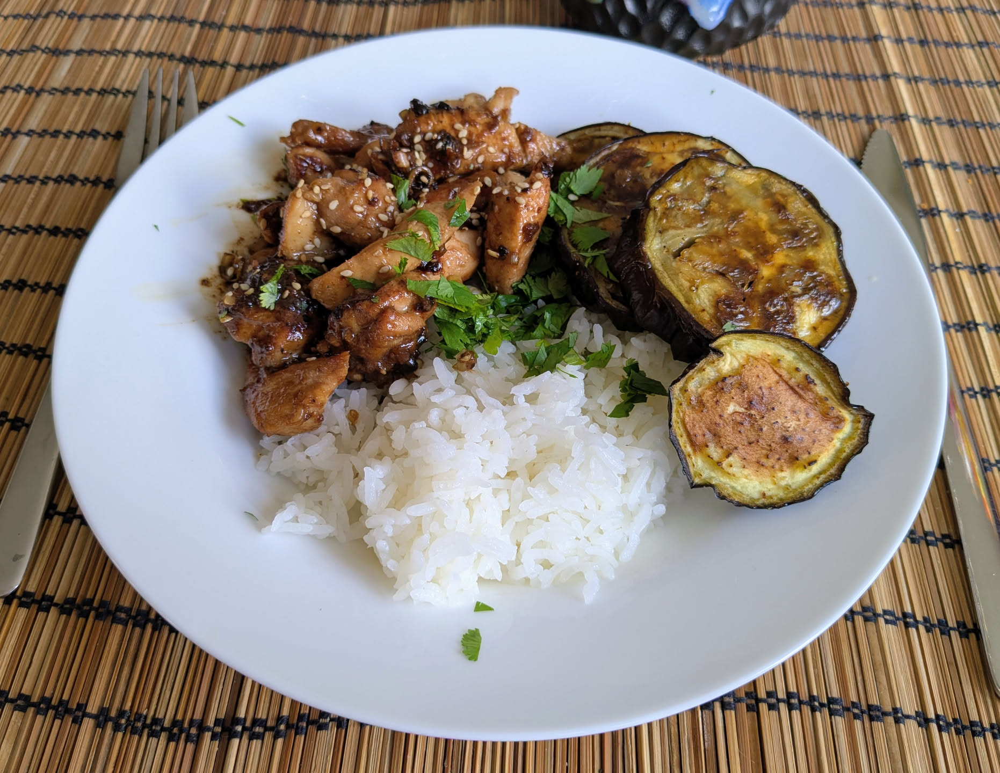

Poulet à la citronnelle

Pour 3-4 personnes :
- 600g de poulet sans os, par example un mélange de blancs et de cuisses désossées
- Trois tiges de citronnelle fraîche
- Deux échalotes
- Deux cuillères à soupe de sucre brun
- Deux cuillères à soupe d'huile neutre
- Deux cuillères à soupe de sauce de poisson (nước mắm)
- Quatre gousses d'ail
- Quatre cuillères à café de sauce soja
- Une pincée de piment en poudre
- Une cuillère à soupe de vinaigre de riz (environ)
- Huile d'olive (pour la cuisson)
- Couper le poulet en morceaux de 2-3cm. Enlever 2-3 couches extérieures des tiges de citronnelle (les plus dures) et les émincer finement, éplucher et émincer finement l'ail et le gingembre. Tout mélanger sauf le vinaigre de riz, et laisser reposer une demi-heure à température ambiante.
- Faire revenir le poulet avec sa marinade dans une poêle bien chaude (ou un wok) avec de l'huile d'olive, en 3-4 fois, jusqu'à ce que tout soit bien brun. Faire déglacer la marinade avec le vinaigre de riz, mélanger tout ensemble, servir chaud ou tiède.